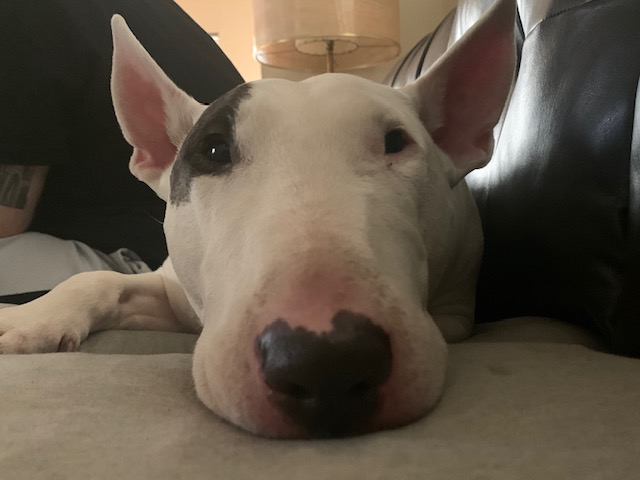
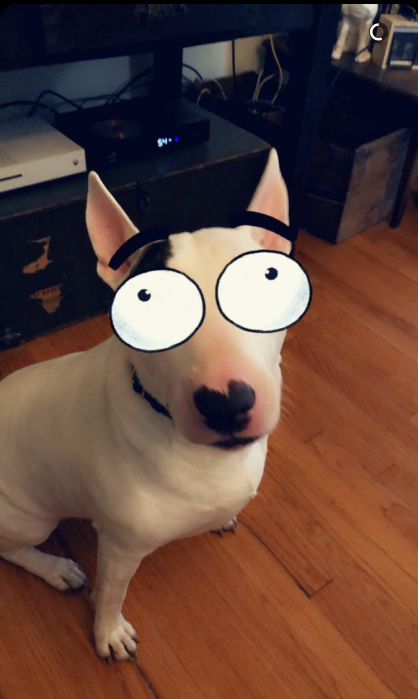
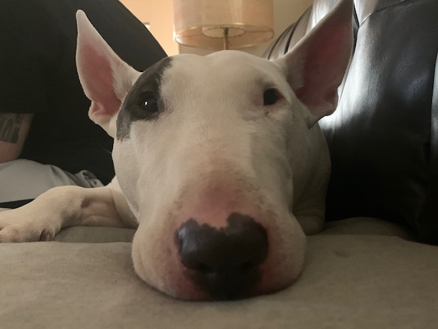
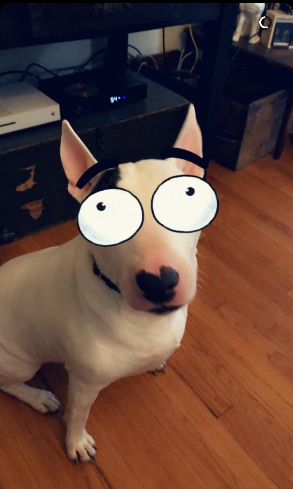

Baby Otto
Otto was born on April 1 (makes sense because he is an actual fool), 2015. He was born in Granite City, Illinois, along with 7 other equally ridiculous looking siblings. My boyfriend (now fiance!) and I brought him home on my 25th birthday. For the first 3 weeks of his life, I couldn't decide on a name, so he answered only to "Little Wayne". I eventually decided to name him "Otto" after Otto Rocket from Nickelodeon's show Rocket Power®. At 8 weeks old, he was smaller than his head is now. We traveled back to our home in Tower Grove Heights, and our house and our lives were NEVER the same or quiet again.